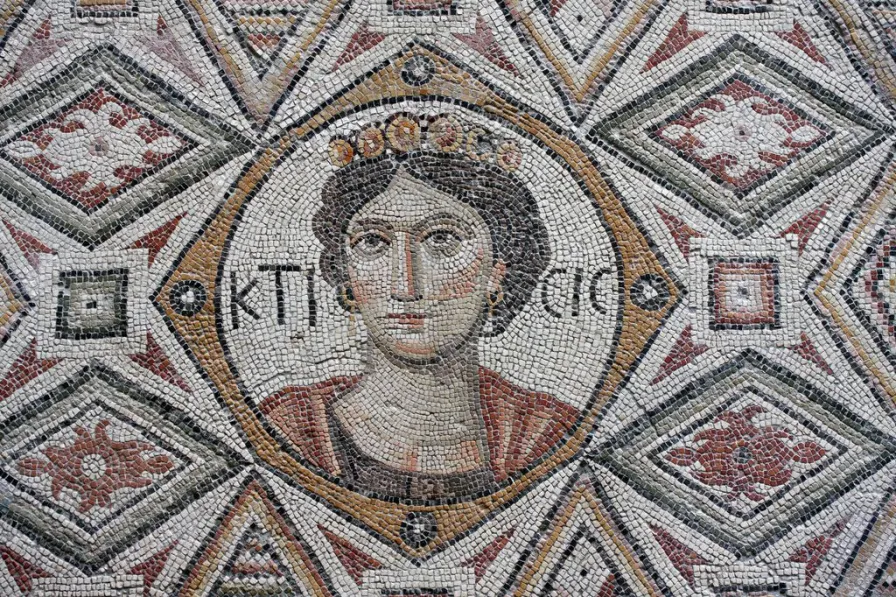

KTICIC Figürü
KTICIC FİGÜRÜ; birinci büyük kare panonun merkezinde, cepheden yuvarlak bir madalyona içerisine yerleştirilmiştir. Kticic; cömert bağış veya vakıf anlamına gelmekte, , aynı zamanda iyi dilek olarak taban mozayiklerinde tasvir edilmişlerdir. Askeri kışla binası olduğu anlaşılan bu yapıyı koruması için, “Koruyucu Tanrıça” olarak mozaik üzerinde tasvir edilmiştir. Kitisis figürü, gövdesinin üst kısmı cepheden tasvir edilmiştir. Kitisis’in başında zengin taşlı mücevherlerle süslü bir taçlı (bant) bulunur. Ktisis’in alnının üstünden, ikiye ayrılan dalgalı kızıl saçları, lüleler halinde yanlara doğru dökülerek yüzünü çevreler. Ense hizasında biten küt saçları vardır. Taçlı, küt saçlı, oval yüzlü, ince zarif boyunlu, tebessüm eder şekilde yüz ifadesi bulunur. Göz bebeklerinin yarısı yukarı kaymıştır. Cticic’in başının sağında ve sol yanında iki ayrık biçimde Latince harflerle KTI-CIC adı yazılıdır. Ktisis’in, sağ omzunu çıplak olarak açıkta bırakan giysisi, sağ elinin parmaklarıyla göğsünün üstündeki sarı renkli olarak tasvir edilmiş, Roma uzunluk ölçüsü aleti tutar. Ktisis tasvirli mozaikler, genellikle Helenistik Çağ, Roma ve Doğu Roma (Erken Bizans) dönemlerin görülür. Afrika, Akdeniz, Kıbrıs, Anadolu ve Doğu Anadolu çevresinde resmi, idari yapı, hamam ve kilise vb. yapıların taban mozaiklerinde tasvir edilmişlerdir. İkinci büyük kare panonun merkezindeki yuvarlak madalyon içerisinde; cepheden Tanrı Priapos Figürü tasvir edilmiştir. Figürün başının iki yanında iki parçaya ayrılmış durumda “solunda ПAPEM- sağında “BOꓥ H” Grekçe yazısı bulunur. Priapos figürü yuvarlak madalyonun ve bu madalyonun dış dört köşesine yerleştirilen sivastika/gamalı haç deseni ve bu svastika motifinin de dış köşelerine dört adet çarkıfelek ve görsel illüzyon etkisi uyandıran yuvarlak madalyonlar yerleştirilmiştir. Bu madalyonların oluşturduğu kare panon da dışında, ince uzun dikdörtgen formunda baklava desenli kuşak bezemesi bulunur.